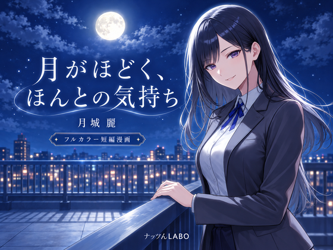

新作漫画 · DLsiteで販売中
月がほどく、
ほんとの気持ち
月城 麗
月夜の屋上で、麗があなたにそっと本音を打ち明ける。静かな夜に心の距離が近づく、フルカラー短編漫画。
本文10ページ／全12ページ（表紙・奥付含む） · PDF・PNG収録
DLsiteで作品を見る・購入する →AIを活用して制作しています。価格・収録内容は販売ページでご確認ください。
広告：DLsiteへのリンクにはアフィリエイトリンクを使用しています。